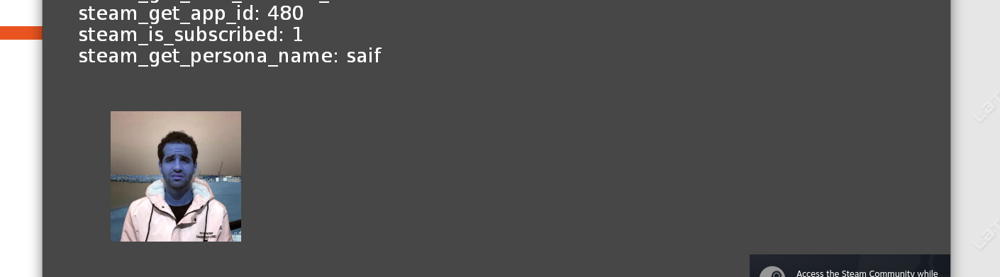

This blog post is related to my Google Summer of Code 2023 project: Steam Workshop SDK/Third Party Integration For ENIGMA .
Social API needs the buffer work from previous GSoC 2022 project.
#2361 provides the
buffer work. We need to merge it to our branch and then start working on it. The code
in this PR is based on AST-Generation branch, which is a branch that
contains the total rewrite for the parser, which also means that it is a very
dangerous branch to work on. So I decided to move on to the next phase which is the
testing.
The problem with testing is it will only pass locally on my machine because I have Steam.exe installed. For the CI, it doesn't have access to Steam which means that all tests are going to fail. stackoverflow.com/questions/71111067 solves my problem. I need to mock the API calls somehow.
I started mocking every every function that I used from Steam API. This was the easy
part. Now if I want to link using the Mock API I specify this:
SOURCES += $(wildcard Universal_System/Extensions/Steamworks/gameclient/SteamMock/sdk/public/steam/*.cpp)
override CXXFLAGS += -I$(ENIGMA_ROOT)/ENIGMAsystem/SHELL/Universal_System/Extensions/Steamworks/gameclient/SteamMock/sdk/public/
And if I want the real API I specify this:
override CXXFLAGS += -I$(ENIGMA_ROOT)/ENIGMAsystem/SHELL/Universal_System/Extensions/Steamworks/gameclient/Steamv157/sdk/public/
override LDFLAGS += -L$(ENIGMA_ROOT)/ENIGMAsystem/SHELL/Universal_System/Extensions/Steamworks/gameclient/Steamv157/sdk/redistributable_bin/linux64
override LDLIBS += -lsteam_api
Note that the above code is applicable for Linux only.
Notice the problem? The CI won't do it this way. I need to find a way that automates it somehow. A way that I don't need to comment and uncomment codes everytime. I asked fundies about it:
you need to make a STEAM_SDk_PATH or similar variable for one
you can make enviornmental variable that can be overriden at compile time
sets a variable in make if its not defined
you make need to do something i dont remember for make to take in enviormental variable prepended to an emake run or lgm startup
but it should be like STEAM_SDK_PATH=/a/path ./emake .....
if you can get that working you need to plumb it into test harness execute command
gfundies — 09/09/2023 01:58
Automate mock generation? Or inject a mock under certain circumstances?
We have TestValues for that, but in general, the mock follows the same interface, so you can use any old global
Josh — 09/09/2023 03:47
I had a very long conversation about that with fundies:
I might’ve just made the mock steam a dll and changed which it loads at runtime using LD_LIBRARY_PATH
gfundies — 14/09/2023 23:30
You can load dlls at runtime tho
What im unsure about is if you can build the game without linking the dll and just load it a runtime or if you can always link the mock dll and load the real one at runtime
gfundies — 14/09/2023 23:33
the CI will load nothing
but it will always find the mock to link
good idea
Saif — 14/09/2023 23:44
Not quite what im trying to say
The game should look for the dll at load time
On the ci you need to tell its where ever you built the mock dll
Using ldlibrarypath before launching the game probably
What i need you to figure out is how to make it so it only matters what dll is available at runtime
Compile time it just needs to be aware that something provides steam funcs
Afaik as long as the two dlls are abi compatible you should be able to swap them at will but I haven’t done this in practice
gfundies — 14/09/2023 23:45
So what I need to do now is to finish the Social API ASAP becuase we much work for the
deployment. When I merged the AST-Generation branch to mine and started working on
it, the new parser didn't like my demo game. I think the new parser hates the old parser
🤣. Anyway let's modify the demo game so that our new parser likes it.
You know what? I think I am gonna use only that branch for implementing my functions. That's becuase GMS wrote the demo game as I wrote.
I implemented a simple demo game that runs very well with the new parser under the
AST-Generation branch. When switching between master and
AST-Generation, I have to run make which takes a noticeable time. I managed to
implement most of the functions but specifically, steam_image_get_rgba(); returns
RGBA data in a buffer. Dhruv mentioned that ENIGMA expects ARGB. See the picture below:

your channels may be mixed
i think enigma expects ARGB
Dhruv Chawla — 11/09/2023 16:40
Now I will leave the rest of the work after the deployment is done. Before working on the Fake API, I need to solve the Stub extensions problem. There are two places I need to inject to Testharness command. The first one is the stubs' location. The second one is the mock location.
The easy one was the stubs' location. However, there are some tests that are not passing
but I think they are not related to the stubs. Here is new structure:
enigma-dev
├── ...
└── ENIGMAsystem
└── SHELL
├── Makefile <--------- Main Makefile
├── ...
└── Universal_System
├── ...
└── StubExtensions
├── ...
└── Steamworks
├── About.ey
├── Makefile
└── stubs.cpp
This is was simple as adding a condition in the main Makefile to enable the stub if the real extension is not enabled.
The fake API nearly implemented but it has a memory leak I need to fix later. The fake API was some source files for the original API headers. As fundies suggested, I will build those sources as a DLL and then load it dynamically if the real API is not available. This way the CI problem will be solved.
After the fake API is implmeneted and tested, there is no major work left. All the upcoming work is considered as flushing, cleaning, and improving the Steamworks extension.